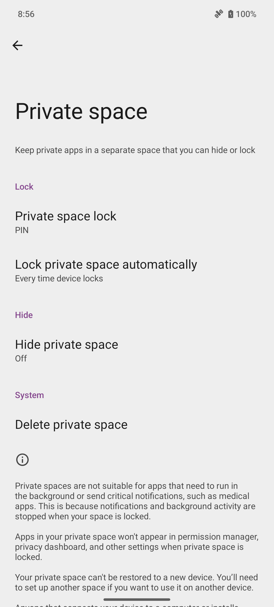
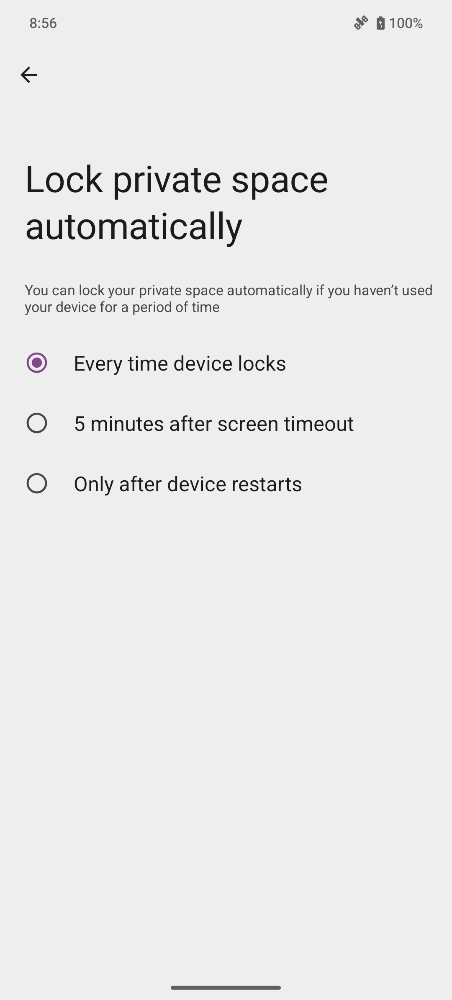
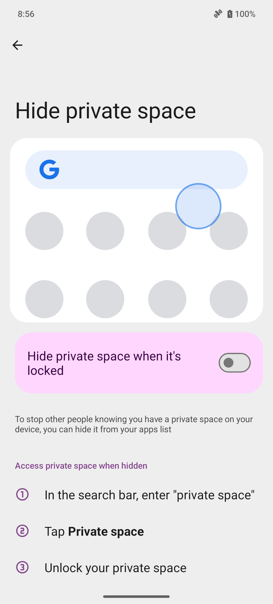
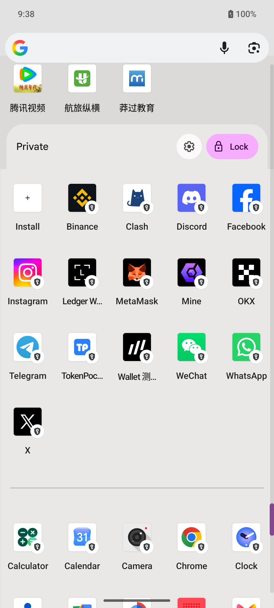
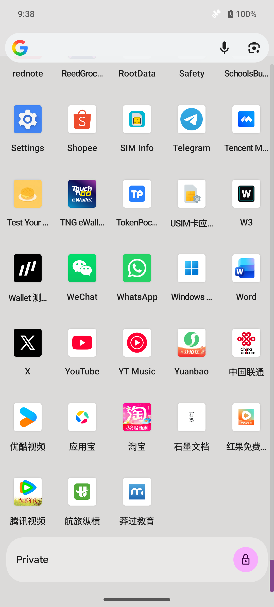

Security and recovery / Private space
Private space: opening, unlocking and locking again
Find Private space on MAG1, recognise its unlocked state, and lock it again using the app drawer.
Verified on MAG1WW53: access to existing-space settings, fingerprint-authenticated opening, the unlocked launcher area, manual locking, and a fresh authentication request when reopening. Five device screenshots and three silent touch-trace videos are included below. The new unlock video shows entry and success, with an editorial note over the protected authentication interval.
Settings → Security & privacy → Private space
Before you start
- An existing Private space was used on MAG1WW53. This is not a first-time setup demonstration.
- Complete fingerprint authentication directly on the phone. Android protects the prompt from screen recording; the video labels that interval with an editorial note.
- The captured system interface is English. App names may retain their own language. Only app icons are shown; no private app is opened.
Observed entry and locking steps
- From the Home screen, swipe up to open the app drawer, then scroll to the bottom to find Private. This route was observed with com.android.launcher3, version 15.
- Tap Private. When locked, this MAG1 displays Verify it’s you, Touch the fingerprint sensor and Use PIN. Complete authentication on the phone.
- In the new unlock recording, the owner completes fingerprint verification on the phone and the Private app list expands. The protected prompt itself records as black; explanatory text marks that interval.
- To finish, tap Lock in the Private header. The recorded test shows the private app area collapse and the header return to a padlock. Ordinary apps remain visible.
- Tap the locked Private entry to open it again. A fresh authentication request was confirmed outside recording, then cancelled; the space was left locked.
- To inspect its controls, open Settings → Security & privacy → Private space and authenticate. View the automatic-lock and hide pages without changing their current values.
Finding a hidden space: on-device instructions, not yet tested
The MAG1 hide-options page says that a hidden private space can be found by entering "private space" in the search bar, selecting Private space and unlocking it. This instruction was read on the phone; the hide switch remained Off, so hidden-space search has not been tested. Google’s reference is linked below for context.
Controls and verification status
- Private / Lock — App-drawer entry observed; manual locking recorded and re-entry authentication checked.
- Private space lock — PIN displayed in Settings; credentials were not changed.
- Lock private space automatically — Every time device locks selected. Also observed: 5 minutes after screen timeout; Only after device restarts. No policy change or timed test.
- Hide private space when it’s locked — Off. The settings page and its search instructions were captured; hiding was not enabled.
Observed result
Verified on MAG1WW53: access to existing-space settings, fingerprint-authenticated opening, the unlocked launcher area, manual locking, and a fresh authentication request when reopening. Five device screenshots and three silent touch-trace videos are included below. The new unlock video shows entry and success, with an editorial note over the protected authentication interval.
Exit and restoration
The test ended with Private space locked and its authentication prompt cancelled. The hide switch stayed Off and automatic locking stayed Every time device locks. Touch indicators were restored to their original Off state. No space, credential, account or private app data was created, deleted or changed.
Troubleshooting
- Unlocking the phone does not necessarily authenticate entry to Private space. Complete the additional prompt on the device.
- Home returns to the ordinary launcher; use the Private header’s Lock button when you want to lock the space explicitly.
- The fingerprint prompt is visible on the phone but records as black through ADB. The unlock video explains that interval; it does not recreate the system dialog.
- If Private is missing, check its hide setting and your launcher version. The hidden-space search instructions were observed, but that route still needs a separate test.
Limits and firmware changes
Test baseline: MAG1WW53 / Android 15 / com.android.launcher3 version 15, 2026-10-14. Verified scope is limited to the routes and manual lock described above. Initial setup, private-app use, timed automatic locking and enabling hide were not tested. The relationship to MAGNE Web3 Secure Space and any vendor-specific shortcut remains unverified. Recheck after firmware or launcher updates.
Google notes that locked private-space apps stop running, and deleting the space removes its local apps and data. Do not use deletion as an ordinary exit step. Google Android Help: Private space
Screenshots & videos
English system interface in the white MAG1 frame. App icons and names remain as installed, without masking or renaming. Notification icons were hidden before capture. The new unlock clip includes entry and the successful return to the app list; Android blocks recording of the fingerprint prompt, so that interval carries an editorial note. All three videos are silent. The separate Lock clip begins with the space already unlocked.









